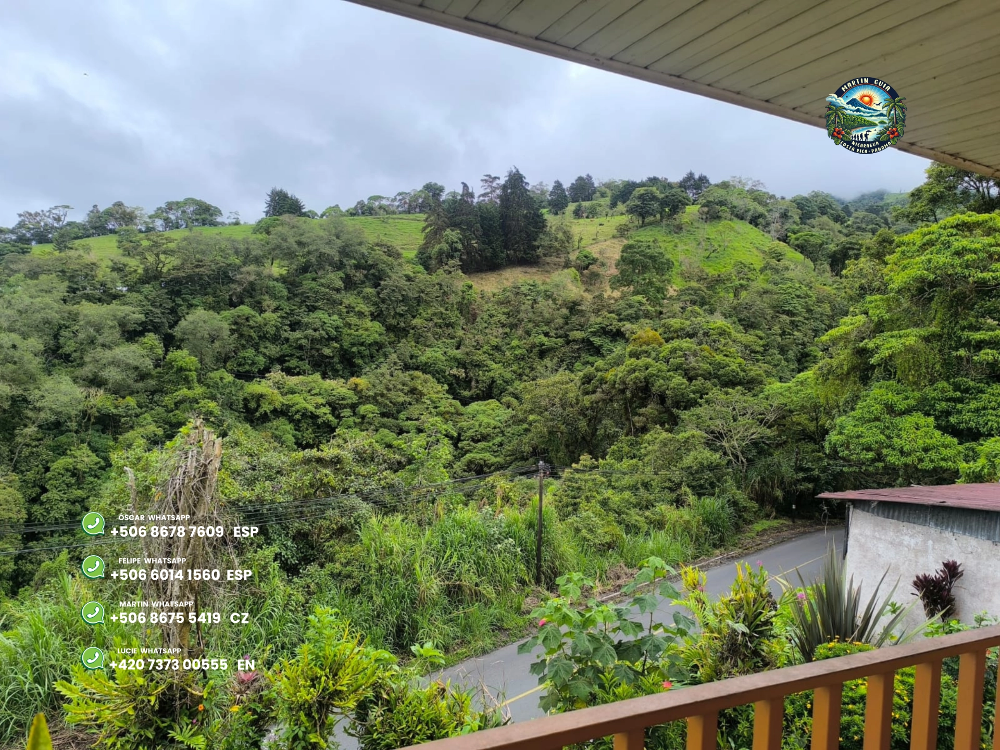

Propiedades · Venta · Santa Cruz de Turrialba
Terreno con vista panorámica - Santa Cruz de Turrialba

Terreno excepcional con vista directa al volcán Turrialba, ubicado en una zona montañosa tranquila de Costa Rica.
La parcela tiene 55 180 m2 y ofrece múltiples posibilidades: residencia privada, eco-turismo, glamping, finca o proyecto mixto de inversión.
Puntos clave
- Superficie total: 55 180 m2
- Vista panorámica al volcán Turrialba
- Acceso privado
- Parte del terreno con selva tropical
Soporte legal
Nuestros abogados (Felipe Saenz y Óscar Ugalde) gestionan el proceso legal completo: revisión de la propiedad, contrato de compraventa y trámite notarial.